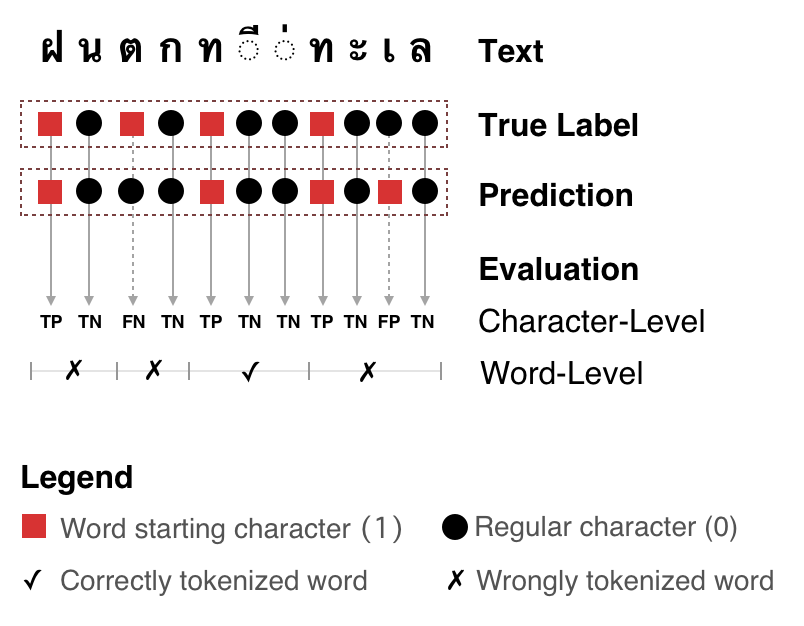

pythainlp.benchmarks
Introduction
The pythainlp.benchmarks module is a collection of utility functions designed for benchmarking tasks related to Thai Natural Language Processing (NLP). The module includes tools for word tokenization benchmarking and evaluation metrics for text generation tasks (BLEU and ROUGE).
Tokenization
Word tokenization is a fundamental task in NLP, and it plays a crucial role in various applications, such as text analysis and language processing. The pythainlp.benchmarks module offers a set of functions to assist in the benchmarking and evaluation of word tokenization methods.
Quality Evaluation
The quality of word tokenization can significantly impact the accuracy of downstream NLP tasks. To assess the quality of word tokenization, the module provides a qualitative evaluation using various metrics and techniques.
{kind=link}

Qualitative evaluation of word tokenization.
Tokenization Functions
- pythainlp.benchmarks.word_tokenization.compute_stats(ref_sample: str, raw_sample: str) dict[str, dict[str, int | str]][source]
Compute statistics for tokenization quality
These statistics include:
- Character-Level:
True Positive, False Positive, True Negative, False Negative, Precision, Recall, and f1
- Word-Level:
Precision, Recall, and f1
- Other:
Correct tokenization indicator: {0, 1} sequence indicating that the corresponding word is tokenized correctly.
- Parameters:
- Returns:
metrics at character- and word-level and indicators of correctly tokenized words
- Return type:
This function is used to compute various statistics and metrics related to word tokenization. It allows you to assess the performance of different tokenization methods.
- pythainlp.benchmarks.word_tokenization.benchmark(ref_samples: list[str], samples: list[str]) pd.DataFrame[source]
Performance benchmarking for samples.
Please see
pythainlp.benchmarks.word_tokenization.compute_stats()for the computed metrics.- Parameters:
- Returns:
dataframe with row x col = len(samples) x len(metrics)
- Return type:
pandas.DataFrame
The benchmark function facilitates the benchmarking of word tokenization methods. It provides an organized framework for evaluating and comparing the effectiveness of different tokenization tools.
- pythainlp.benchmarks.word_tokenization.preprocessing(txt: str, remove_space: bool = True) str[source]
Clean up text before performing evaluation.
- Parameters:
- Returns:
preprocessed text
- Return type:
Preprocessing is a crucial step in NLP tasks. The preprocessing function assists in preparing text data for tokenization, which is essential for accurate and consistent benchmarking.
Evaluation Metrics
The module provides pure Python implementations of common evaluation metrics (BLEU and ROUGE) that automatically handle Thai text tokenization. These metrics are essential for evaluating machine translation, text summarization, and other text generation tasks.
BLEU Score
BLEU (Bilingual Evaluation Understudy) is a metric for evaluating the quality of machine-translated text. It compares the generated text against one or more reference translations by measuring n-gram precision with a brevity penalty.
- pythainlp.benchmarks.bleu_score(references: list[str] | list[list[str]], hypotheses: list[str], tokenize: str = 'newmm', lowercase: bool = False, max_ngram: int = 4, smooth: bool = True) dict[str, float | list[float]][source]
Calculate BLEU score for Thai text with automatic tokenization.
This is a pure Python implementation of BLEU (Bilingual Evaluation Understudy) metric that automatically tokenizes Thai text using PyThaiNLP before calculating the score.
- Parameters:
references (Union[list[str], list[list[str]]]) – reference translations. Can be: - A list of strings (one reference per hypothesis) - A list of lists of strings (multiple references per hypothesis)
hypotheses (list[str]) – hypothesis translations to evaluate
tokenize (str) – tokenization engine to use (default: “newmm”). See
pythainlp.tokenize.word_tokenize()for available engines.lowercase (bool) – whether to lowercase text before evaluation (default: False)
max_ngram (int) – maximum n-gram order (default: 4)
smooth (bool) – whether to use smoothing for zero counts (default: True)
- Returns:
dictionary with
'bleu','precisions','bp','length_ratio','hyp_length', and'ref_length'. The'precisions'value is alist[float]; all other values arefloat.- Return type:
- Example:
from pythainlp.benchmarks import bleu_score references = ["สวัสดีครับ วันนี้อากาศดีมาก"] hypotheses = ["สวัสดีค่ะ วันนี้อากาศดี"] score = bleu_score(references, hypotheses) print(f"BLEU score: {score['bleu']:.2f}")
# Multiple references per hypothesis references = [ ["สวัสดีครับ", "สวัสดีค่ะ"], # two refs for first hypothesis ["ลาก่อนครับ", "ลาก่อนค่ะ"], # two refs for second hypothesis ] hypotheses = ["สวัสดี", "ลาก่อน"] score = bleu_score(references, hypotheses)
Example:
from pythainlp.benchmarks import bleu_score
# Single reference
references = ["สวัสดีครับ วันนี้อากาศดีมาก"]
hypotheses = ["สวัสดีค่ะ วันนี้อากาศดี"]
score = bleu_score(references, hypotheses)
print(f"BLEU: {score['bleu']:.2f}")
# Multiple references per hypothesis
references = [
["สวัสดีครับ", "สวัสดีค่ะ"],
["ลาก่อนครับ", "ลาก่อนค่ะ"],
]
hypotheses = ["สวัสดี", "ลาก่อน"]
score = bleu_score(references, hypotheses)
print(f"BLEU: {score['bleu']:.2f}")
ROUGE Score
ROUGE (Recall-Oriented Understudy for Gisting Evaluation) is a set of metrics for evaluating automatic summarization and machine translation. It measures the overlap between the generated text and reference text(s).
- pythainlp.benchmarks.rouge_score(reference: str, hypothesis: str, tokenize: str = 'newmm', rouge_types: list[str] | None = None) dict[str, tuple[float, float, float]][source]
Calculate ROUGE scores for Thai text with automatic tokenization.
This is a pure Python implementation of ROUGE (Recall-Oriented Understudy for Gisting Evaluation) metric that automatically tokenizes Thai text using PyThaiNLP.
Supported ROUGE types: - rouge1: unigram-based scoring - rouge2: bigram-based scoring - rougeL: longest common subsequence-based scoring
- Parameters:
reference (str) – reference text
hypothesis (str) – hypothesis text to evaluate
tokenize (str) – tokenization engine to use (default: “newmm”). See
pythainlp.tokenize.word_tokenize()for available engines.rouge_types (Optional[list[str]]) – list of ROUGE types to calculate. Default is [“rouge1”, “rouge2”, “rougeL”]
- Returns:
dictionary mapping ROUGE type to (precision, recall, fmeasure)
- Return type:
- Example:
from pythainlp.benchmarks import rouge_score reference = "สวัสดีครับ วันนี้อากาศดีมาก" hypothesis = "สวัสดีค่ะ วันนี้อากาศดี" scores = rouge_score(reference, hypothesis) print(f"ROUGE-1 F-measure: {scores['rouge1'][2]:.4f}") print(f"ROUGE-2 F-measure: {scores['rouge2'][2]:.4f}") print(f"ROUGE-L F-measure: {scores['rougeL'][2]:.4f}")
Example:
from pythainlp.benchmarks import rouge_score
reference = "สวัสดีครับ วันนี้อากาศดีมาก"
hypothesis = "สวัสดีค่ะ วันนี้อากาศดี"
scores = rouge_score(reference, hypothesis)
for rouge_type, (precision, recall, fmeasure) in scores.items():
print(f"{rouge_type}: P={precision:.4f}, R={recall:.4f}, F={fmeasure:.4f}")
Word Error Rate (WER)
Word Error Rate is a common metric for evaluating speech recognition and machine translation systems. It measures the minimum number of word-level edits (insertions, deletions, substitutions) needed to transform the hypothesis into the reference.
- pythainlp.benchmarks.word_error_rate(reference: str, hypothesis: str, tokenize: str = 'newmm') float[source]
Calculate Word Error Rate (WER) for Thai text with automatic tokenization.
Word Error Rate is a common metric for evaluating speech recognition and machine translation systems. It measures the minimum number of word-level edits (insertions, deletions, substitutions) needed to transform the hypothesis into the reference, normalized by the reference length.
WER = (S + D + I) / N
where: - S = number of substitutions - D = number of deletions - I = number of insertions - N = number of words in reference
- Parameters:
- Returns:
word error rate as a float (0.0 = perfect, >1.0 = very poor)
- Return type:
- Example:
from pythainlp.benchmarks import word_error_rate reference = "สวัสดีครับ วันนี้อากาศดีมาก" hypothesis = "สวัสดีค่ะ วันนี้อากาศดี" wer = word_error_rate(reference, hypothesis) print(f"WER: {wer:.4f}")
Example:
from pythainlp.benchmarks import word_error_rate
reference = "สวัสดีครับ วันนี้อากาศดีมาก"
hypothesis = "สวัสดีค่ะ วันนี้อากาศดี"
wer = word_error_rate(reference, hypothesis)
print(f"WER: {wer:.4f}")
Character Error Rate (CER)
Character Error Rate is a metric for evaluating speech recognition and optical character recognition (OCR) systems. It measures the minimum number of character-level edits (insertions, deletions, substitutions) needed to transform the hypothesis into the reference.
- pythainlp.benchmarks.character_error_rate(reference: str, hypothesis: str) float[source]
Calculate Character Error Rate (CER) for Thai text.
Character Error Rate is a metric for evaluating speech recognition and optical character recognition (OCR) systems. It measures the minimum number of character-level edits (insertions, deletions, substitutions) needed to transform the hypothesis into the reference, normalized by the reference length.
CER = (S + D + I) / N
where: - S = number of substitutions - D = number of deletions - I = number of insertions - N = number of characters in reference
- Parameters:
- Returns:
character error rate as a float (0.0 = perfect, >1.0 = very poor)
- Return type:
- Example:
from pythainlp.benchmarks import character_error_rate reference = "สวัสดีครับ" hypothesis = "สวัสดีค่ะ" cer = character_error_rate(reference, hypothesis) print(f"CER: {cer:.4f}")
Example:
from pythainlp.benchmarks import character_error_rate
reference = "สวัสดีครับ"
hypothesis = "สวัสดีค่ะ"
cer = character_error_rate(reference, hypothesis)
print(f"CER: {cer:.4f}")
Usage
To make use of these benchmarking functions, you can follow the provided examples and guidelines in the official PyThaiNLP documentation. These tools are invaluable for researchers, developers, and anyone interested in improving and evaluating Thai word tokenization methods and text generation systems.